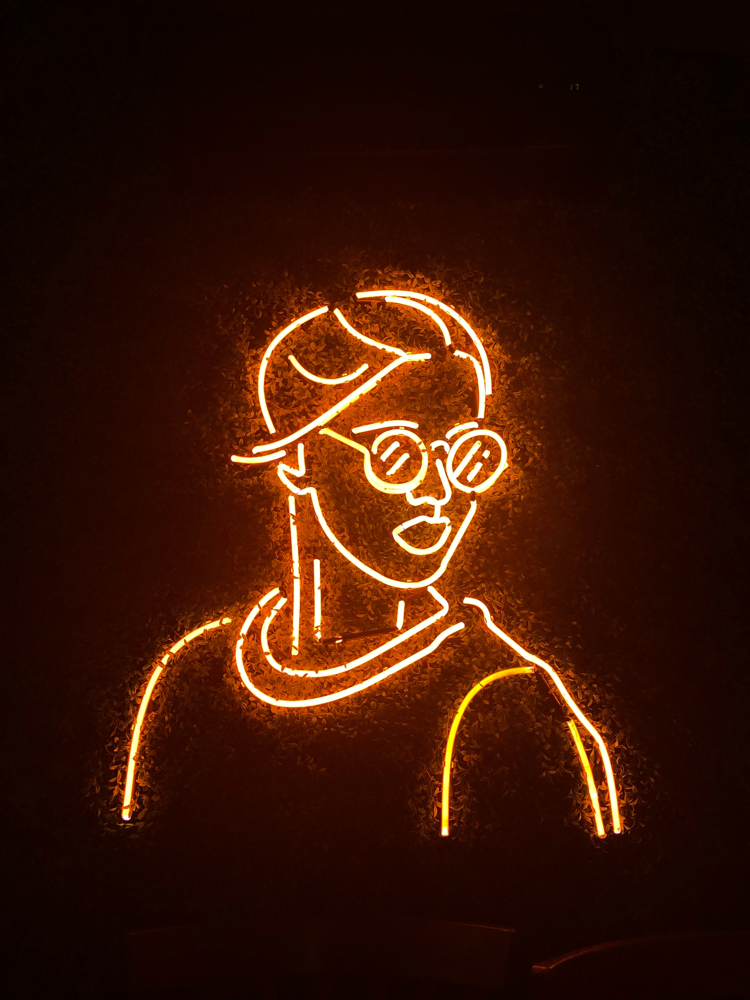
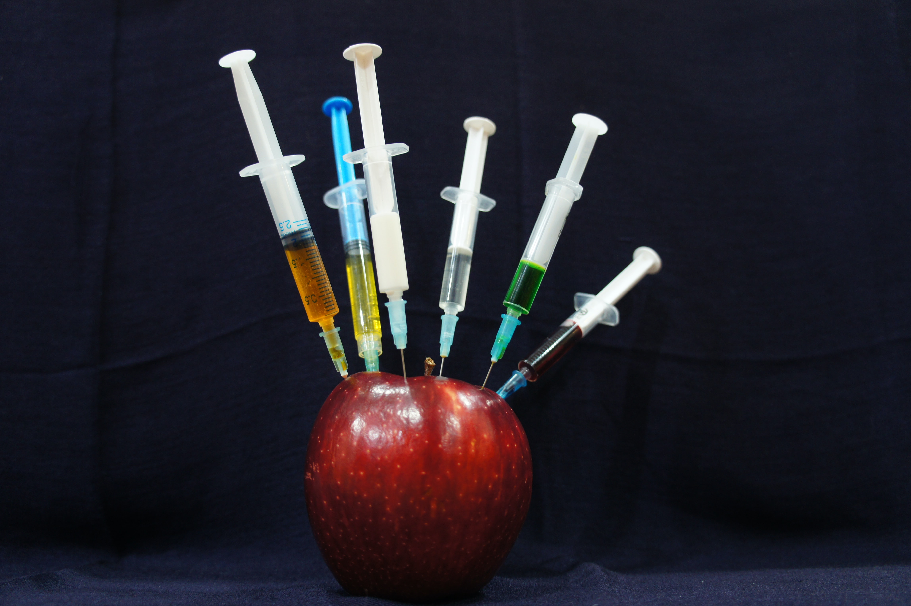
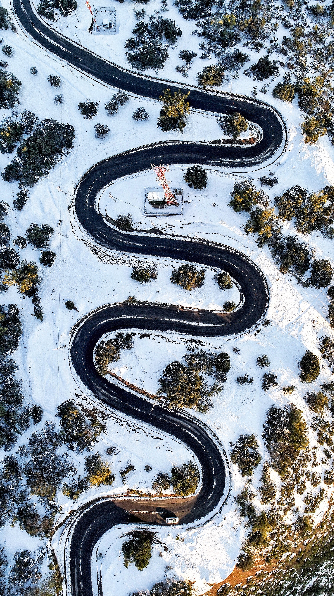

Portfolio
Featured Projects
A selection of personal and research projects demonstrating practical applications of machine learning, computer vision, and optimization algorithms.
.jpg)
Road Text Recognition for Cycling
Real-time OCR system for detecting and recognizing text painted on roads during cycling. Deployed on Raspberry Pi for embedded inference.
Tech: Semantic Segmentation, OCR, Geometric Transformation, Raspberry Pi
.jpg)
AI-Powered Bike Fitting Analysis
Computer vision system to analyze cyclist posture and biomechanics, providing recommendations to improve performance and reduce injury risk.
Tech: Pose Estimation, OpenCV, Biomechanics Analysis
Multi-Step Time Series Forecasting
Winning solution for Analytics Vidhya challenge. Decomposes series into trend, seasonal, and noise components for accurate multi-step prediction.
Tech: STL Decomposition, Scikit-learn, Feature Engineering
Black & White Photo Colorization
Neural network-based colorization of black and white mountain images. Compared U-Net, Autoencoder, and ResNet architectures.
Tech: U-Net, CNNs, ResNet, PyTorch

Real-time Facial Recognition System
End-to-end face detection and recognition pipeline using deep learning for identity verification.
Tech: Keras, Face Detection, CNN, Feature Extraction

ML Hyperparameter Genetic Optimization
Genetic algorithm for automated hyperparameter tuning of scikit-learn models, outperforming grid search.
Tech: Genetic Algorithms, Optimization, Scikit-learn

Genetic Function Approximation
Novel approach to approximate complex functions using genetic algorithms and binary expression trees. Successfully approximated prime number sequence.
Tech: Genetic Programming, Expression Trees, Symbolic Regression
Optimal Mastermind Solver
Algorithmic solution for the Mastermind game using information theory and constraint satisfaction.
Tech: Algorithm Design, Game Theory, Information Theory